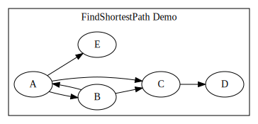

背景
项目中某个模块需要描述状态之间的迁移关系，根据外界条件得到目标状态，然后再根据当前状态到目的状态之间找到最短路进行迁移，同时状态迁移过程中执行一系列动作。
原先做法是定义一个巨大的数据头文件，描述边集（两两状态之间的连接关系），同时根据已有边集人肉算出所有状态之间的最短路径并补充到头文件中去，不仅工作量大、容易出错，而且当状态数一多，头文件便难以维护，可读性也差。当状态的字段一多，头文件变化更大，容易冲突。
若不想在运行时计算最短路径，又想解决数据头文件的问题，这时候元编程派上了用场，编译时根据边集数据，计算出图所有节点（状态）之间的最短路数据，同时提供接口供运行时查询。
代码原型
首先看看设计的用户界面如何，再进一步探讨如何实现。完整代码可以见：FindShortestPath.cpp，感兴趣的也可以看看这个在线编译的结果：https://godbolt.org/z/WW6o93。
struct A: Node<'A'> {};
struct B: Node<'B'> {};
struct C: Node<'C'> {};
struct D: Node<'D'> {};
struct E: Node<'E'> {};
using g = Graph<
__link(__node(A) -> __node(B) -> __node(C) -> __node(D)),
__link(__node(A) -> __node(C)), // test shortest path: A -> C -> D
__link(__node(B) -> __node(A)), // test cycle
__link(__node(A) -> __node(E)) >; // test D -> E unreachable
static_assert(g::getPath('A', 'D').sz == 3); // compile-time
static_assert(g::getPath('A', 'A').sz == 1);
static_assert(g::getPath('B', 'D').sz == 3);
static_assert(g::getPath('B', 'E').sz == 3);
static_assert(g::getPath('D', 'E').sz == 0);
int main(int argc, char** argv) {
char from = 'A';
char to = 'D';
if (argc > 2) {
from = argv[1][0]; // A
to = argv[2][0]; // D
}
auto path = g::getPath(from, to); // runtime
std::cout << "from" << from << "to" << to
<< "path size:" << path.sz << std::endl;
for (size_t i = 0; i < path.sz; ++i) {
std::cout << path.path[i];
if (i != path.sz - 1) {
std::cout << "->";
}
}
std::cout << std::endl;
return 0;
}上述代码描述的图如下：

这幅图把所有场景都覆盖到了：
- 存在环：
A->B->A A->D最短路径其实是A->C->DD->E不可达- 通过给程序传参 运行时 查询任意节点间的最短路径
实现
constexpr 或模板元？
图的所有节点之间最短路径其实有成熟算法，比如 Floyd–Warshall 算法，可以在
考虑编译时计算，可选择的就不那么多了，毕竟编译时一切都是常量计算。而编译时计算有两种做法：
- constexpr，参考我之前一篇文章C++ 元编程之 Parser Combinator，构造一个容器存放最短路径结果
- 模板元编程，退而求其次
在 C++20 之前还不支持编译期动态分配内存，导致在 constexpr 可用容器有限（得提前计算容器大小，开大了浪费），那么就没有模板元编程方式那么灵活了，毕竟模板元的基石 List 闭包结构是可以动态任意长度的，不过好处是借助容器可以轻而易举地实现 Floyd-Warshall, Dijkstra, 宽度优先搜索算法，而且编译期 constexpr 是安全的，出现数组越界等内存问题则导致 编译错误，而不是运行错。
由于 constexpr 的能力有限，可行但实现代价过高，我选择了用模板元编程，后果是只能选择递归版的深度优先搜索算法，而目前编译速度足够快，等出现难以忍受情况下，我会考虑重构成递归版广度优先搜索算法。
解构边集
提供给用户描述的其实是一条条链A->B->C->D，我们需要解构成边集：{A->B, B->C, C->D}，这一部分可以参考我之前文章：C++ 元编程之代码生成：设计并实现图 DSL。
template<typename... Chains>
class Graph {
using AllConnections = // 边集
Unique_t<Concat_t<typename Chain<Chains>::type...>>;
...
};笛卡尔积
若要求出所有节点间的最短路径，首先得得到任意节点之间的两两组合，也就是对源节点集合和目的节点集合求笛卡尔积。
using AllPairs = CrossProduct_t<
Unique_t<Map_t<AllConnections, ConnectionTrait<>::GetFrom>>,
Unique_t<Map_t<AllConnections, ConnectionTrait<>::GetTo>>,
std::pair>;深度优先搜索
对两点之间求最短路径，首先给出伪代码如下：
find_shortest_path(from, to, path = []):
if from == to: return path # reach target
if from in path: return [] # find cycle
for each (from, v) in edges: # expand next nodes
cur_path = from + find_shortest_path(v, to)
path = min(path, cur_path)
return path算法很简单，指定两个点，然后递归求出两点间最短路径，注意边界情况有两种：遇到圈了或者到达目的地。
对照伪代码，元函数声明如下：
template<typename F, typename TARGET,
typename PATH = TypeList<>, typename = void>
struct PathFinder;考虑到达目的地的情况，通过模式匹配得到一条可行路径：
// Reach TARGET!
template<typename TARGET, typename PATH>
struct PathFinder<TARGET, TARGET, PATH> {
using type = typename PATH::template appendTo<TARGET>;
};另一个边界情况是发现环，返回一个空的路径。注意判断条件，若当前节点出现在路径中，说明遇到了环：
// Skip cycle
template<typename CURR_NODE, typename TARGET, typename PATH>
struct PathFinder<CURR_NODE, TARGET, PATH,
std::enable_if_t<!IsTypeList_v<CURR_NODE> &&
Elem_v<PATH, CURR_NODE>>>: TypeList<> {}; // return empty path比较棘手的是从当前节点出发，到达下一个邻接节点，同时从所有可行路径中求出最短的，这也是伪代码后两句所描述的。
这里我们分两步实现，首先得到当前节点的邻接节点集合，其次递归遍历集合中的每个点：
template<typename CURR_NODE, typename TARGET, typename PATH>
class PathFinder<CURR_NODE, TARGET, PATH,
std::enable_if_t<! std::is_same_v<CURR_NODE, TARGET> &&
!IsTypeList_v<CURR_NODE> &&
!Elem_v<PATH, CURR_NODE>>> {
using EdgesFrom = Filter_t<AllConnections,
ConnectionTrait<CURR_NODE>::template IsFrom>;
// 得到邻接节点集合
using NextNodes = Map_t<EdgesFrom, ConnectionTrait<>::GetTo>;
public:
using type = typename PathFinder<NextNodes, TARGET,
typename PATH::template appendTo<CURR_NODE>>::type;
};遍历邻接集合中每个点，并选出最短路径：
// Expansion NextNodes
template<typename TARGET, typename PATH, typename ...CURR_NODE>
class PathFinder<TypeList<CURR_NODE...>, TARGET, PATH> {
using AllPaths = TypeList<
typename PathFinder<CURR_NODE, TARGET, PATH>::type...
>;
template<typename ACC, typename Path> struct PathCmp {
using type = std::conditional_t<(ACC::size == 0 ||
((ACC::size > Path::size) && Path::size > 0)),
Path, ACC>;
};
public:
using type = FoldL_t<AllPaths, TypeList<>, PathCmp>;
};以上就是编译期求最短路径代码，但还差最后一步，就是生成路径数据，提供接口供编译期查询。
动静结合
这一步最关键了，若无法运行时使用，那么就没多大价值了。
很容易想到，定义一个数据结构，用于存放路径数据：
template<typename NODE_TYPE>
struct Path {
const NODE_TYPE* path;
size_t sz;
};
template<typename NODE, typename... NODEs>
class PathStorage {
using NODE_TYPE = std::decay_t<decltype(NODE::id)>;
constexpr static NODE_TYPE
pathStorage[] { NODE::id, NODEs::id... };
public:
constexpr static Path<NODE_TYPE> path {
.path = pathStorage,
.sz = sizeof...(NODEs) + 1,
};
};接着将前两步结合起来，定义一个数据类型 PATH_PAIR：std::pair<std::pair<FROM, TO>, PATH>，第一个类型描述的是起点、终点序对信息，第二个类型存放它们之间的最短路径。
template<typename PAIR>
struct GetPath {
using type = std::pair<PAIR,
typename PathFinder<typename PAIR::first_type,
typename PAIR::second_type>::type>;
};别忘了过滤掉不可达节点之间的路径（长度为 0），避免存储不必要的数据：
template<typename PATH_PAIR>
struct IsNonEmptyPath {
constexpr static bool value = (PATH_PAIR::second_type::size > 0);
};将得到的 PATH_PAIR 数据存到之前定义的 PathStorage 类中去：
template<typename PATH_PAIR>
struct SavePath {
using type = std::pair<typename PATH_PAIR::first_type,
typename PATH_PAIR::second_type::template exportTo<PathStorage>>;
};所有节点路径串在一起，就是：
using AllPaths = Map_t<Filter_t<
Map_t<AllPairs, GetPath>,
IsNonEmptyPath>, SavePath>;有了数据，就可以提供接口用于查表，通过匹配节点的 ID，得到最终路径：
template<typename NODE_TYPE, typename FROM, typename TO, typename PATH>
constexpr static bool matchPath(NODE_TYPE from, NODE_TYPE to,
Path<NODE_TYPE>& path, std::pair<std::pair<FROM, TO>, PATH>) {
if (FROM::id == from && TO::id == to) {
path = PATH::path;
return true;
}
return false;
}
template<typename NODE_TYPE, typename ...PATH_PAIRs>
constexpr static void matchPath(NODE_TYPE from, NODE_TYPE to,
Path<NODE_TYPE>& path, TypeList<PATH_PAIRs...>) {
(matchPath(from, to, path, PATH_PAIRs{}) || ...);
}
// export compile/run-time interface
template<typename NODE_TYPE>
constexpr static Path<NODE_TYPE> getPath(NODE_TYPE from, NODE_TYPE to) {
Path<NODE_TYPE> path{};
matchPath(from, to, path, AllPaths{});
return path;
}检视汇编
比较好奇的是最后我们的代码在二进制文件中如何呈现？是否如我们所愿，数据区里存放着所有节点路径信息？这时候可以检视一下编译器生成的汇编代码https://godbolt.org/z/WW6o93，发现确实如此：
Graph<...>::PathStorage<A, B>::pathStorage:
.ascii "AB"
Graph<...>::PathStorage<A, C>::pathStorage:
.ascii "AC"
Graph<...>::PathStorage<A, C, D>::pathStorage:
.ascii "ACD"
Graph<...>::PathStorage<A>::pathStorage:
.byte 65
Graph<...>::PathStorage<A, E>::pathStorage:
.ascii "AE"
Graph<...>::PathStorage<B>::pathStorage:
.byte 66
Graph<...>::PathStorage<B, C>::pathStorage:
.ascii "BC"
Graph<...>::PathStorage<B, C, D>::pathStorage:
.ascii "BCD"
Graph<...>::PathStorage<B, A>::pathStorage:
.ascii "BA"
Graph<...>::PathStorage<B, A, E>::pathStorage:
.ascii "BAE"
Graph<...>::PathStorage<C>::pathStorage:
.byte 67
Graph<...>::PathStorage<C, D>::pathStorage:
.ascii "CD"而查找路径也是一条条 cmp 语句：
cmpb $65, %cl
sete %dl
jne .LBB0_8
cmpb $66, %al
jne .LBB0_8
movl $Graph<...>::PathStorage<A, B>::pathStorage, %r12d
movb $66, %bpl
jmp .LBB0_30
...尾声
期待 C++20 的 constexpr，这样算法写起来就简单多了。其实元编程也不是很复杂，如果熟悉函数式编程的话，会发现思路其实很像，只不过是 C++ 元素过多看起来很吓人，所以学函数式编程还是有必要的，能更好的发挥模板元编程的潜力。